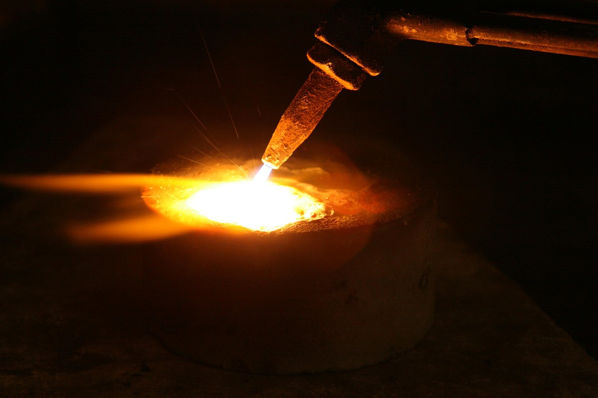

中 광물통제 3년, 가격 무기에서 공급망 절단으로

중국은 2023년 8월 갈륨·게르마늄 수출 허가제를 도입한 이후 3년간 통제 품목을 흑연·희토류·안티몬·비스무트·인듐으로 확대했다. 갈륨 국제가격은 규제 전 kg당 약 200달러에서 2026년 현재 1,800달러 수준으로 약 9배 폭등했으며, 게르마늄은 규제 전 대비 3배 수준을 유지하고 있다.
초기 통제는 가격 인상을 통한 수익 극대화 성격이 강했으나, 2025년 이후 허가 심사 지연과 물량 쿼터 삭감을 통해 공급망 자체에 접근하지 못하도록 막는 방식으로 전환됐다. 실제로 2025년 하반기 한국 반도체 소재 기업 복수社가 갈륨 수입 허가 심사에서 4~6개월 지연을 경험했다.
통제 품목의 산업 연계성이 확장되고 있다. 갈륨은 GaN 전력반도체(AI 데이터센터 전력 변환 효율 핵심)로, 희토류 네오디뮴은 산업용 로봇·전기차 모터 액추에이터로, 인듐은 OLED·LCD 터치패널 ITO 전극으로 각각 연결된다. AI·로봇·디스플레이 세 축이 동시에 중국 통제망 안에 들어온 셈이다.
한국의 갈륨 연간 수요는 40~50t으로 추정되며 이 중 약 80%를 중국산에 의존해왔다. 고려아연이 2028년부터 연 15.5t 생산을 목표로 하지만, 수요 대비 30~40% 수준에 그쳐 2028년 이후에도 절반 이상을 대체 루트에서 조달해야 하는 구조다.
중국의 전략 전환이 의미하는 바는 단순 가격 인상 압력이 아니다. 공급망 접근 자체를 허가 단위로 통제함으로써, 한국 기업이 대금을 지불해도 소재를 받지 못하는 상황을 제도화하고 있다. 이는 기존 원자재 가격 헤지 전략으로는 대응 불가능한 새로운 리스크 차원이다.
AI 인프라 투자 사이클과의 충돌이 핵심이다. 전 세계 데이터센터 투자가 2025~2027년 연간 2,000억 달러 규모로 급증하는 시점에 GaN 전력반도체 소재(갈륨)가 공급망 병목에 걸리면, AI 인프라 납기 지연이 소재 단계에서 발생하는 구조다. 반도체 설계·장비 이슈가 아닌 소재 이슈가 AI 투자 사이클을 막는 시나리오다.
한국의 대응 시간표가 수요를 따라가지 못하고 있다. 고려아연 갈륨 양산(2028년), 게르마늄 국내 대체(2027년 예상)까지 최소 1~2년의 공백이 남아 있다. 이 기간 동안 일본·캐나다·카자흐스탄 등 대체 공급선 확보가 실질적으로 얼마나 진전됐는지가 실제 리스크 크기를 결정한다.
일본은 갈륨 수출 재개를 4개월 만에 확보했다. 이는 일본이 WTO 제소를 진행하면서 동시에 외교 채널을 병행한 결과로, 소재 외교와 법적 대응을 투트랙으로 운영한 사례다. 한국 기업 입장에서는 일본 경유 조달 루트가 단기 대안으로 부상했으나, 재판매 마진과 물량 한계가 있다.
캐나다·호주 기반 갈륨 생산 프로젝트가 수혜를 본다. 캐나다 Teck Resources와 호주 Altech Chemicals가 갈륨·게르마늄 부산물 추출 사업을 확장 중이며, 국제가격 9배 수준이 유지되는 한 경제성이 확보된다. 한국 소재 기업의 선제적 offtake 계약이 대안 루트 조기 확보의 핵심이다.
GaN 전력반도체를 사용하는 한국 AI 인프라 공급업체들이 직격탄을 맞는다. 데이터센터용 전력변환 모듈에 GaN 소자가 들어가는데, 갈륨 공급 허가가 4~6개월 지연되면 최종 납기도 같은 폭으로 밀린다. 국내 전력반도체 모듈 제조사 3~4곳이 이 경로에 직접 노출돼 있다.
산업용 로봇 액추에이터용 네오디뮴 자석을 국내 조달하지 못하는 협력사들이 타격을 받는다. 현대로보틱스·레인보우로보틱스 등 피지컬 AI 로봇 기업이 중국산 희토류 자석에 60~70% 의존하는 구조이며, 대체 공급선(일본 TDK·신에쓰) 전환에는 최소 12~18개월의 검증 기간이 필요하다.
단기(2026년): 갈륨·게르마늄·네오디뮴 재고 기준을 기존 3개월에서 6개월로 상향 조정해야 한다. 공급 허가 지연 4~6개월을 버퍼로 계산하면, 3개월 재고는 실질적으로 무재고와 같다. 재고 금융 비용을 공급 리스크 보험료로 재정의해야 한다.
중기(2026~2027년): 캐나다·호주·카자흐스탄 생산자와 3년 이상 offtake 계약을 체결하고, 국내 수요 기업과 공동 구매 컨소시엄을 구성해 협상력을 높여야 한다. 단독 구매자보다 연간 10~15t 규모 컨소시엄이 현지 생산자에게 더 매력적인 계약 상대다.
투자자 관점: 갈륨 정제·재활용 기술을 보유한 국내 중소기업(에이치엔지, 나인테크 등)의 수혜 가능성을 주목해야 한다. 갈륨 스크랩 재활용 효율이 85% 이상이면 신규 채굴 없이도 일부 수요를 내재화할 수 있다.
실제 조달 현장에서는 — 2025년 하반기부터 허가증 발급 대신 '심사 중' 상태가 수개월간 유지되는 사례가 복수 확인됐다. 공급 계약이 있어도 통관이 멈추는 상황이다. 이에 따른 실행 제언: 중국 이외 공급선에서 소량이라도 정기 구매 이력을 먼저 만들어 두는 것이 우선이다. 실적 없는 공급선 전환은 위기 시점에 계약 체결 자체가 불가능하다.
이 포스팅은 쿠팡 파트너스 활동의 일환으로 수수료를 제공받습니다.